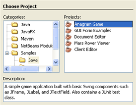

In the IDE, choose File > New Project and select the Samples category as the project type/
In the IDE, choose File > New Project and select the Samples category as the project type/
NetBeans IDE not only provides great productivity tools, but also includes sample applications and tutorial solutions that show you complex technologies at work. These samples are provided as ready-to-use NetBeans IDE projects and each comes with an informative readme file so you can get started quickly — check them out!
The samples for the current version of the IDE are listed under the main Samples node
 Sample: CarPreview [Download]
Sample: CarPreview [Download]Description: To do
Tags: --
Sample: Customer Book - test [Download]Description: Test sample
Tags: --
Sample: TwitterSwingClient [Download]Description: This is a simple, graphical, REST-based client that displays Twitter public timeline messages.
Tags: swing twitter client
Sample: Using Java Persistence in a Java EE 5 Web Application [Download]Description: A zip archive of the solution to the Using Java Persistence in a Java EE 5 Web Application tutorial.
Tags: netbeans solution java web
Sample: Using Hibernate in a Java EE 5 Web Application [Download]Description: A zip archive of the solution to the Using Hibernate in a Java EE 5 Web Application tutorial.
Tags: netbeans solution java web
Sample: NewsApp solution zip archive [Download]Description: NewsApp Solution project for NetBeans tutorial to create an EJB with a Message-Driven Bean and Session Bean using NetBeans IDE 6.7
Tags: netbeans solution javaee web
Sample: ZooApp solution zip archive [Download]Description: A zip archive of the solution to the Java Persistence in the Java EE 5 Platform tutorial that demonstrates using Java Persistence.
Tags: netbeans solution javaee
Sample: Creating an Application Client [Download]Description: An archive of the solution to the Creating an Application Client tutorial for users of GlassFish 3.0.
Tags: netbeans solution javaee
Sample: JNIDemo [Download]Description: Sample code shows Java Native Interface (JNI) application for tutorial at http://netbeans.org/kb/docs/cnd/beginning-jni-linux.html
Tags: netbeans jni linux c
Sample: Enabling Java Web Start [Download]Description: An application which converts measurements between metric and U.S. units. Used as an example in the Enabling Java Web Start tutorial.
Tags: java web start
Sample: Using Hibernate in a Java Swing Application [Download]Description: A zip archive containing the solution to the Using Hibernate in a Java Swing Application tutorial.
Tags: netbeans solution hibernate
Sample: Creating a Maven Swing Application Using Hibernate [Download]Description: A zip archive containing the solution to the Creating a Maven Swing Application Using Hibernate tutorial.
Tags: netbeans maven
Sample: Deadlock Detection and Debugging Multithreaded Applications [Download]Description: A zip archive containing sample projects used in the Deadlock Detection and Debugging Multithreaded Applications tutorial.
Tags: netbeans debugging sample solution
Sample: Deployment tutorial for JavaSE [Download]Description: Source files for the Java SE Deployment tutorial
Tags: --
Sample: Designing an Advanced Java Form Using the GridBag Customizer [Download]Description: A zip archive with the demo project used in the Designing an Advanced Java Form Using the GridBag Customizer tutorial.
Tags: java netbeans gridbag layout customizer gui builder advanced
Sample: Exploring GridBag Customizer Basic Features [Download]Description: A zip archive with the GridBagCustomizerBasicTutorial demo project containing the initial and target tutorial layouts.
Tags: java netbeans gridbag layout customizer gui builder basic
Sample: Code Formatting Features in NetBeans IDE [Download]Description: A zip archive containing a demo project for the Code Formatting Features in NetBeans IDE screencast.
Tags: java editor formatting indentation braces import project-specific netbeans ide
Sample: Gap Editing Support in the NetBeans GUI Builder [Download]Description: An archive with the initial and target layouts used in the Gap Editing Support in the NetBeans GUI Builder tutorial.
Tags: gui builder component gap edit layout space
Sample: Hello 3D World zip archive [Download]Description: How to get started with 3-D Java games using the jMonkeyEngine, and how to package a Java project (incl. native libraries) into one JAR.
Tags: netbeans sample project 3-d java jmonkeyengine jar ant one-jar
Sample: Generating a JSF 1.2 CRUD Application from a Database [Download]Description: Solution project for the tutorial Generating a JSF 1.2 CRUD Application from a Database.
Tags: --
Sample: DojoTreeSample [Download]Description: Sample used for Dojo tutorial for NetBeans IDE 7.3
Tags: netbeans web 7.3 dojo
Sample: Introduction to the Google Web Toolkit tutorial [Download]Description: Solution project for the Introduction to the Google Web Toolkit tutorial
Tags: gwt google web toolkit
Sample: Introduction to the Spring Framework [Download]Description: Solution project for the Introduction to the Spring Framework tutorial (version 6.9)
Tags: spring web mvc framework
Sample: Introduction to the Spring Framework [Download]Description: Solution project for the Introduction to the Spring Framework tutorial (versions 6.7, 6.8)
Tags: spring mvc framework
Sample: Introduction to Developing Web Applications [Download]Description: EE 5 version of the application created in the Introduction to Developing Web Applications tutorial
Tags: web ee5 introduction
Sample: Introduction to Developing Web Applications [Download]Description: EE6 version of the application created in the Introduction to Developing Web Applications tutorial. Works only on GlassFish v3!
Tags: ee6 introduction
Sample: Creating a Simple Web Application Using a MySQL Database [Download]Description: Solution project for the Creating a Simple Web Application Using a MySQL Database tutorial
Tags: mysql web application webapp glassfish data source connection pool
Sample: Introduction to Ajax [Download]Description: The solution project for the Introduction to Ajax tutorial
Tags: ajax asynchronous javascript xml
Failed reading Kenai download directory of https://netbeans.org/http://netbeans.org/kb/docs/web/jsf-jpa-crud-code1.html
Sample: Generating a JavaServer Faces 2.0 CRUD Application from a Database [Download]Description: The solution project for the Generating a JavaServer Faces 2.0 CRUD Application from a Database tutorial
Tags: javaserver faces 2.0 jsf crud eclipselink
Sample: Using Hibernate in a Web Application [Download]Description: A zip archive of the Java EE 6 version of the solution to the Using Hibernate in a Web Application tutorial.
Tags: netbeans solution javaee hibernate
Sample: Creating an Application Client [Download]Description: An zip archive of the solution to the Creating an Application Client tutorial for users of GlassFish 3.1.
Tags: netbeans solution javaee
Sample: Creating an Enterprise Application Using Maven [Download]Description: A zip archive of the Java EE 6 version of the solution to the Creating an Enterprise Application Using Maven tutorial.
Tags: netbeans solution javaee
Sample: Creating an Enterprise Application with EJB 3.1 [Download]Description: A zip archive of the Java EE 6 version of the solution to the Creating an Enterprise Application with EJB 3.1 tutorial.
Tags: netbeans solution javaee
Sample: Getting Started with Java EE 5 Applications [Download]Description: Solution to the Getting Started with Java EE 5 Applications tutorial to create a 3.0 EJB with a MDB and Session Bean accessed via servlet.
Tags: netbeans solution javaee
Sample: Getting Started with Java EE 6 Applications [Download]Description: A zip archive of the solution to the Getting Started with Java EE 6 Applications tutorial when using NetBeans IDE 7.2.
Tags: netbeans java ee
Sample: Getting Started with Java EE 6 Applications [Download]Description: A zip archive of the solution to the Getting Started with Java EE 6 Applications tutorial.
Tags: netbeans solution javaee
Sample: Consulting Agency - base 1 [Download]Description: Solution and sources for first part of the tutorial
Tags: --
Sample: Consulting Agency - base 2 [Download]Description: Solution and sources for second part of the tutorial
Tags: netbeans solution javaee jsf
Sample: Consulting Agency - base 3 [Download]Description: Solution and sources for second part of the tutorial
Tags: netbeans solution javaee jsf
Sample: mysql-zip [Download]Description: archive containing sql script for creating and populating the MySQL database for use in the Consulting Agency CRUD JSF 1.2 tutorial
Tags: --
Sample: NetBeans E-commerce Tutorial [Download]Description: The completed project for the NetBeans E-commerce Tutorial
Tags: e-commerce netbeans tutorial affablebean
Sample: Preparing the Page Views and Controller Servlet [Download]Description: Placeholders created for all page views. See Preparing the Page Views and Controller Servlet
Tags: affablebean snapshot 1 e-commerce
Sample: Securing the Application [Download]Description: The project snapshot used in the eleventh unit, Securing the Application
Tags: e-commerce netbeans tutorial affablebean declarative security ssl form-based authentication
Sample: Preparing the Page Views and Controller Servlet [Download]Description: The snapshot of the project after completing the fifth unit, Preparing the Page Views and Controller Servlet
Tags: affablebean snapshot 2 e-commerce
Sample: Connecting the Application to the Database [Download]Description: The snapshot of the project after completing the sixth unit, Connecting the Application to the Database
Tags: affablebean snapshot 3 e-commerce
Sample: Adding Entity Classes and Session Beans [Download]Description: The project snapshot after completing the seventh unit, Adding Entity Classes and Session Beans
Tags: e-commerce affablebean entity session facade ejb jpa
Sample: Managing Sessions [Download]Description: The project snapshot used with the eighth unit, Managing Sessions
Tags: e-commerce affablebean session cookies url rewriting
Sample: Managing Sessions [Download]Description: The snapshot of the project after completing the eighth unit, Managing Sessions
Tags: e-commerce affablebean session cookies url rewriting
Sample: Integrating Transactional Business Logic [Download]Description: The project snapshot used with the ninth unit, Integrating Transactional Business Logic
Tags: e-commerce netbeans tutorial affablebean transaction acid
Sample: Integrating Transactional Business Logic [Download]Description: The project snapshot after completing the ninth unit, Integrating Transactional Business Logic
Tags: e-commerce netbeans tutorial affablebean transaction acid
Sample: Hello World for JavaFX Composer [Download]Description: A Hello World application for the "Getting Started with JavaFX Composer" tutorial
Tags: javafx composer
Sample: RESTful Data Source [Download]Description: This is a completed sample application from the Working With a RESTful WS Data Source In JavaFX Composer tutorial, including all UI components
Tags: rest javafx composer
Sample: A css stylesheet [Download]Description: A css stylesheet for the DB Client tutorial
Tags: --
Sample: DB client application [Download]Description: DB client application for the Database Client tutorial
Tags: --
Sample: Image [Download]Description: An image for the DB project
Tags: --
Sample: Using JavaFX Graphic Resources [Download]Description: A complete project for the Using JavaFX Graphic Resources tutorial for JavaFX Composer.
Tags: javafx composer production suite
Sample: Logo image [Download]Description: The image in the EPS format
Tags: --
Sample: Connecting a Dojo Tree to an ArrayList using JSON [Download]Description: The sample project used in the Connecting a Dojo Tree to an ArrayList using JSON tutorial
Tags: dojo javascript toolkits
Sample: Introduction to Ajax for Java Web Applications [Download]Description: The solution project for the Introduction to Ajax for Java Web Applications tutorial
Tags: ajax javascript
Sample: Using jQuery to Enhance the Appearance and Usability of a Web Page [Download]Description: The project files used with the Using jQuery to Enhance the Appearance and Usability of a Web Page tutorial
Tags: jquery javascript toolkits
Sample: Using jQuery to Enhance the Appearance and Usability of a Web Page [Download]Description: JPG images used in the Using jQuery to Enhance the Appearance and Usability of a Web Page tutorial
Tags: --
Sample: ContactBrowserExample [Download]Description: Shows how to create an SVG-based, touch screen enabled UI for Java ME devices.
Tags: touch enabled svg ui jsr226 widgets composer
Sample: FileBrowserExample [Download]Description: Shows how to use File Browser component in a mobile application for JSR-75 enabled devices.
Tags: filebrowser visual mobile designer midp components jsr-75
Sample: LoginScreenExample [Download]Description: Shows how to use the Login Screen component within a client application and how to connect it to server resources using authenticated access.
Tags: loginscreen visual mobile designer midp components
Sample: LoginScreenServletExample [Download]Description: Web application required for the LoginScreenExample mobile application.
Tags: servlet loginscreen web application
Sample: MobileClientToWebApplicationSample [Download]Description: Shows the resulting web and mobile client projects for the Mobile Client to Web Application Wizard: Creating a Client-Server Application tutorial.
Tags: mobile client to web application wizard
Sample: MobileGame-for-adding-game-logic.zip [Download]Description: Contains a project with additional files required for the Adding the Game Logic section of the Creating a Mobile Game tutorial (http://netbeans.org/kb/docs/javame/mobilegame.html).
Tags: game logic visualmidlet palette wizard
Sample: MobileGame-for-creating-game.zip [Download]Description: Contains a project with additional files required for creating a game in the Creating the Game section of the Creating a Mobile Game tutorial (http://netbeans.org/kb/docs/javame/mobilegame.html).
Tags: jsr 178 svg game builder sprite tiledlayer scene
Sample: MobileGame-for-multiple-players-ready.zip [Download]Description: Contains a resulting project in the Playing with Friends section of the Creating a Mobile Game tutorial (http://netbeans.org/kb/docs/javame/mobilegame.html).
Tags: jsr 172 web service client multiplayer game svg ui
Sample: MobileGame-for-multiple-players.zip [Download]Description: Contains projects required for creating a game for multiple players in the Playing with Friends section of the Creating a Mobile Game tutorial (http://netbeans.org/kb/docs/javame/mobilegame.html).
Tags: jsr 172 web service client multiplayer game
Sample: MobileGame-game-created.zip [Download]Description: Shows a resulting project in the Creating the Game section of the Creating a Mobile Game tutorial (http://netbeans.org/kb/docs/javame/mobilegame.html).
Tags: jsr 178 svg game builder sprite tiledlayer scene
Sample: Introduction to Ajax for PHP Web Applications [Download]Description: Solution project for the Introduction to Ajax for PHP Web Applications tutorial
Tags: php ajax
Sample: Creating NetBeans Platform Applications from Maven Archetypes [Download]Description: Archive of project sources for the tutorial Creating NetBeans Platform Applications from Maven Archetypes.
Tags: netbeans platform
Sample: HTML5 Demo project resources [Download]Description: project resources for Getting Started with HTML5 Applications tutorial
Tags: netbeans html5 web client javascript css
Sample: HTML5DemoCssSiteTemplate.zip [Download]Description: Site template that is the solution to the HTML5 CSS tutorial
Tags: --
Sample: HTML5DemoSiteTemplate.zip [Download]Description: Site Template used in HTML5 CSS tutorial
Tags: --
In addition to the samples listed in the tree on this page, there are plenty of samples bundled with the IDE. To open the IDE bundled samples, choose File > New Project and select the Samples category.